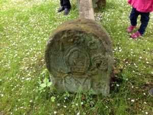
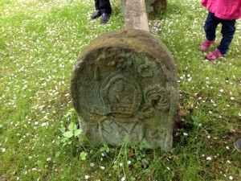

dodano: 30-05-2013
W Podlesiu (inna nazwa to Ulanowice) przed kościołem znajdują się dwa cysterskie kamienie graniczne - opisałem je tutaj już kilka lat temu. Słyszałem też przekazywane mi przez Witolda Papierniaka historie o tym, że ulanowickie kamienie graniczne wykorzystywane były jako słupki do ławki: w styczniu 2005 roku pisał: "Z kolei o dwóch innych kamieniach granicznych z czasów opata Innocentego Fritscha to słyszałem, że w Ulanowicach ktoś je sobie wykopał, przeniósł do ogródka przy domu i wykorzystał jako podstawę pod siedzisko ławeczki ..." a także w październiku 2008 roku: "Słyszałem, że ponoc te dwa kamienie z Ulanowic ktoś sobie ileś lat temu wykorzystał jako nogi pod ławeczkę na terenie swego ogródka. I chyba stamtad trafiły one pod kościół ...". Co prawda są to tylko zasłyszane informacje, ale przykręcone do ulanowickich kamieni granicznych stalowe kątowniki całkowicie zostały najprawdopodobniej w tym celu przykręcone ...
I ta ciekawa historia z ławeczką byłaby sobie tylko zasłyszaną historią gdybym nie natknął się w maju 2013 roku na zdjęcia owej ławeczki - i to współczesne. Na stronie http://dolny-slask.org.pl/539703,Lubawka,Kamienie_graniczne_opactwa_krzeszowskiego.html osoba podpisująca się inicjałami "wk" opublikowała zdjęcia obiektu "Kamienie graniczne opactwa krzeszowskiego" z następującym opisem: "Na terenie zespołu pielgrzymkowego w Ulanowicach (obecnie Lubawka - Podlesie) są cztery dobrze zachowane kamienie (słupki) graniczne z roku 1727, kiedy to rozgraniczono ostatecznie dobra cysterskie opactwa w Krzeszowie i jezuickie (z Zaclerza)". I do tego zdjęcia znanych mi kamieni granicznych przed kościołem oraz zdjęcia ławeczki z historii Witolda Papierniaka wraz z podaną jej lokalizacją "w ogrodzie Domu Opatów".
Przy pierwszej okazji pojawiłem się w Ulanowicach z zamiarem odszukania tej ławeczki. W tomie 9 Słownika Geografii Turystycznej Sudetów ów Dom Opatów nazwany jest pałacem opackim - niestety jest on dziś bardzo zniszczony. Przed budynkiem, dokładnie tam gdzie się spodziewałem, w ogrodzie znalazłem poszukiwaną ławeczkę. Zapytałem też o jej historię: podobno kiedyś ławka ta znajdowała się pod rosnącą kilkadziesiąt metrów dalej starą lipą a kiedy lipa ta się wywróciła ławka została przeniesiona bliżej pałacu opackiego. Deski ławki zapewne już dawno temu uległy zniszczeniu a ta współczesna, prowizoryczna jest za delikatna i dlatego musi być podparta ...
Ławka umieszczona jest w osi północ-południe. Kamienie graniczne są zdecydowanie większe od innych - zbliżone są raczej do kamienia granicznego z Chełmska Śląskiego. Występuje też na nich, w odróżnieniu od innych, herb cystersów. Cyfry i litery są zatarte i bardzo słabo czytelne - prawdopodobnie na kamieniu północnym znajduje się liczba "550" i litera "P" a na kamieniu południowym liczba "526" - choć równie dobrze mogą to być liczby "650" i "626". Z tyłu kamienia południowego znajduje się napis "IHS" oraz powtórzona data "1727".
Poniżej kilka moich zdjęć z 26 maja 2013 roku:
 


dodano: 10-09-2015
Na ciekawą informację na trafiłem w numerze 20 pisma "Bractwo Krzyżowców" wydawanego przez PTTK Świdnica. Na stronie 12 znajduje się doniesienie numer 138 z dnia 21 września 1992 roku autorstwa Zygmunta Sarneckiego: "(...) Przed kilkoma dniami znalazłem o czym marzyłem, to co długo szukałem - dwa słupki! Co ciekawe kilka razy w roku bywałem w tym miejscu. Są inne od znanych. Szersze i w środku liczby 1727 wyryty herb opactwa. Jeden z nich z rytem jezuickim. (...) o szczegółach wraz z wymiarami, fotografią czy rysunkami napiszę w późniejszym czasie". Doniesienie to nie zawiera co prawda informacji o lokalizacji tych słupków - ale wszystko wskazuje na to, że są to właśnie opisane wyżej dwa kamienie.

{kind=link}
{kind=link}
{kind=link}
{kind=link}